★★★★★
"Combining my volunteering with the Zanzibar Island tour was a dream come true. VOT makes it so easy to experience the real Tanzania while contributing to a great cause."
James O'Connor — Ireland, Tourism & Hospitality
Combine volunteering with adventure — Mwanza day trips, national park safaris, and Zanzibar Island getaways, all organized around your placement with VOT.
Looking for the Tourism & Hospitality Internship? See the internship program
Adventure, Organized For You
In addition to your placement, we organize trips for you.
We organize tours to all the major destinations in the country, including the famous Zanzibar Island. There are more than 15 different national parks and reservation areas in Tanzania — Tanzanian nature offers many memorable experiences, all arranged around your volunteer placement.
01 — Day Trips
Explore Mwanza and its surroundings on a guided day trip — a great add-on for volunteers with a free day during their placement. Visit Bismarck Rock, the shores of Lake Victoria, Saanane Island — the country's only island national park — historic sites, and lively local markets.
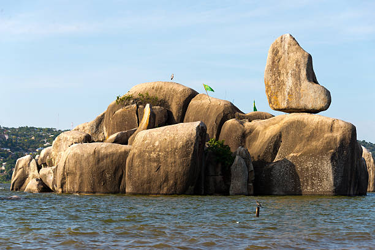

Experience the vibrant city of Mwanza with arrangements made by VOT management.

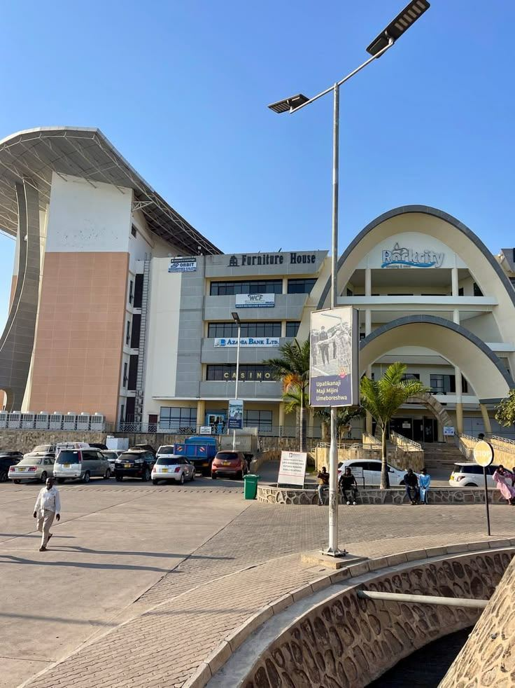

The Sukuma Museum is a community-oriented organization committed to promoting and honoring the traditional and contemporary arts of the Sukuma culture.
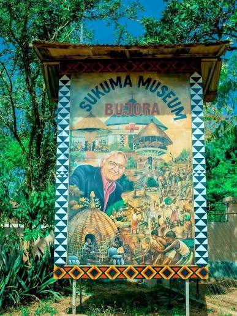
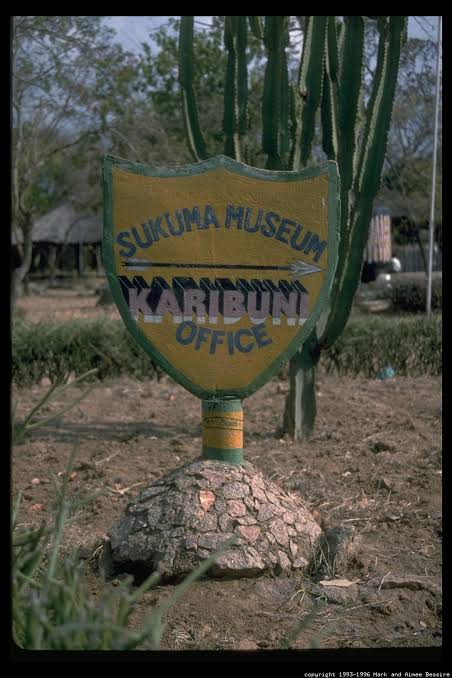
Home of the famous Bulabo Dance Festival in June, where dancers compete using various animals as props.
Join workshops offering training in traditional Sukuma arts.
Full Bujora Cultural Museum details →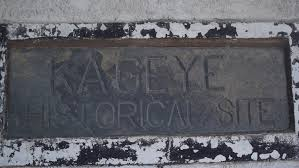
Located 40 km northeast of Mwanza in the village of Kayenze, this tranquil fishing community was once the most important port on the southern shore of Lake Victoria in the late 19th century.
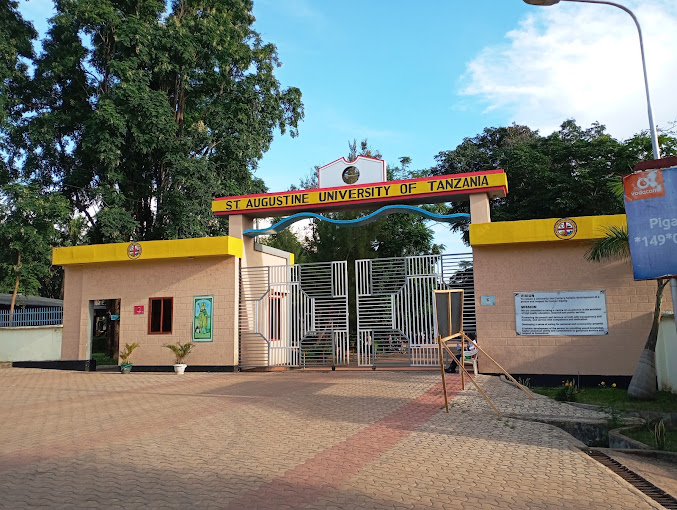
Visit SAUT - the largest private university and third largest overall in Tanzania, located just 3 km from VOT Hostel.
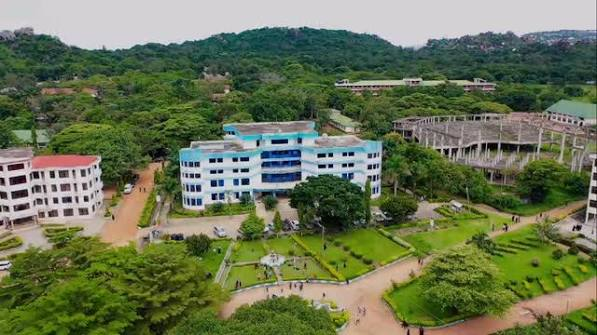
Students from Tanzania, Kenya, Uganda, Sudan, Ethiopia, Burundi, Malawi, Zambia, Germany, and other nations.
Full St. Augustine University Visit details →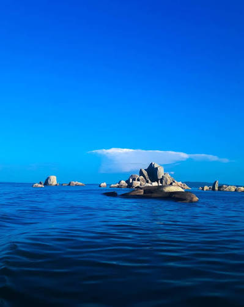
Visit Africa's largest inland island covering 530 km², located 50 km north of Mwanza in Lake Victoria.
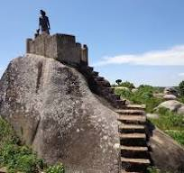
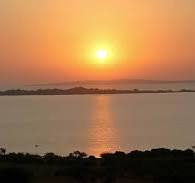
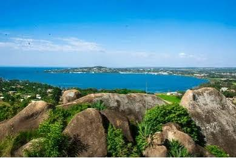
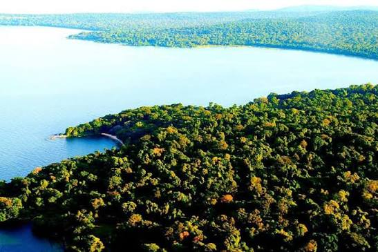
Whether you're a volunteer with free time or a tourist on a short visit, we can help you experience the best of Mwanza and its surroundings.
Contact us to book your adventure today!
Book Your Tour Now02 — Safaris
Book a safari to Serengeti, Ngorongoro, or other Tanzanian national parks during your volunteer placement with VOT. From the great migration to the Ngorongoro Crater, Tanzanian nature offers many memorable experiences.
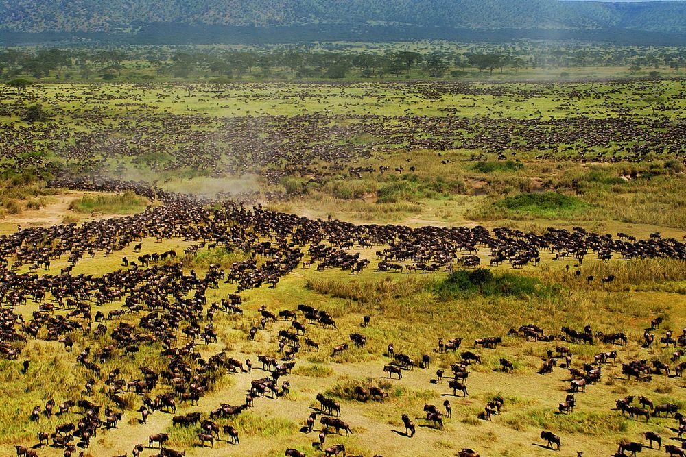
Recognized as one of the 'Seven New Wonders of the World', Serengeti National Park is globally renowned for the spectacular wildebeest and zebra migration.
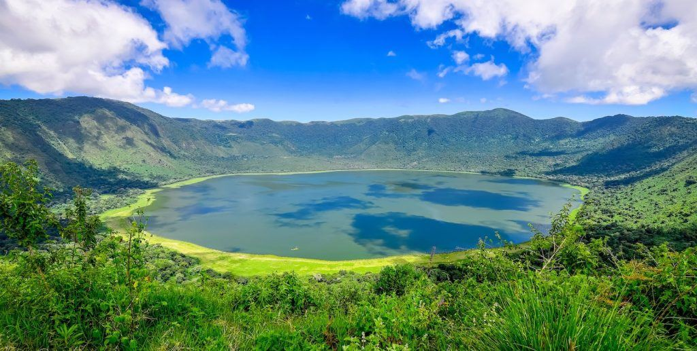
The world's largest inactive volcanic caldera, often called the "Eighth Wonder of the World". A UNESCO World Heritage Site teeming with wildlife.
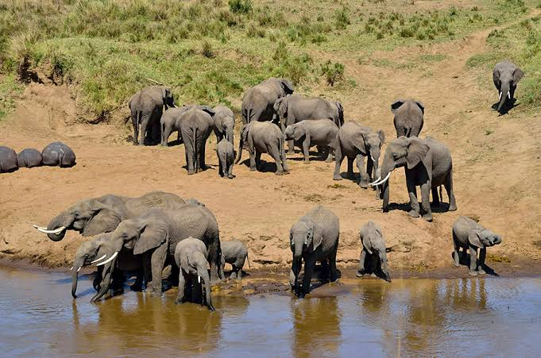
Famous for its massive elephant herds and ancient baobab trees, Tarangire offers an authentic safari experience with fewer crowds.
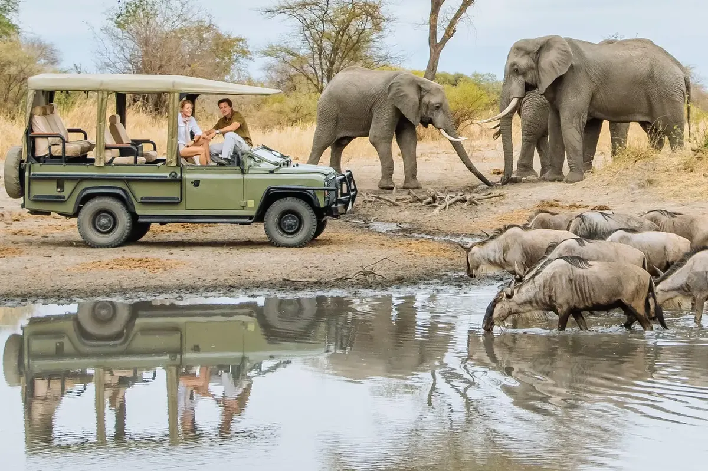
A compact park famous for tree-climbing lions, flamingos, and diverse ecosystems from groundwater forests to alkaline lake shores.
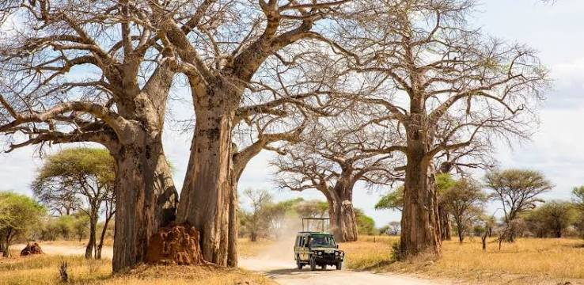
Tanzania's largest national park, offering wild, untouched landscapes and one of Africa's last great wildernesses.
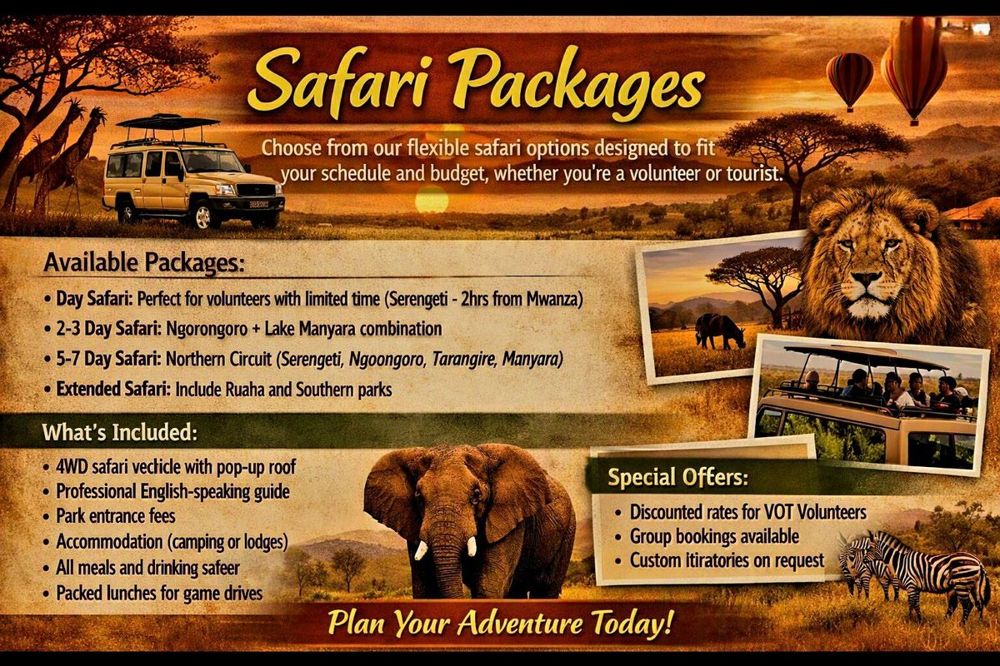
Choose from our flexible safari options designed to fit your schedule and budget, whether you're a volunteer or tourist.
Whether you're a volunteer with a free weekend or a tourist exploring Tanzania, we'll arrange the perfect safari experience for you.
Book now and witness Africa's greatest wildlife spectacles!
Book Your Safari Now03 — Island Getaway
Extend your Tanzania volunteer trip with a Zanzibar Island getaway — beaches, culture, and history organized through VOT. Wander Stone Town's alleys, relax on Nungwi's white beaches, and join a spice tour or sunset dhow cruise.
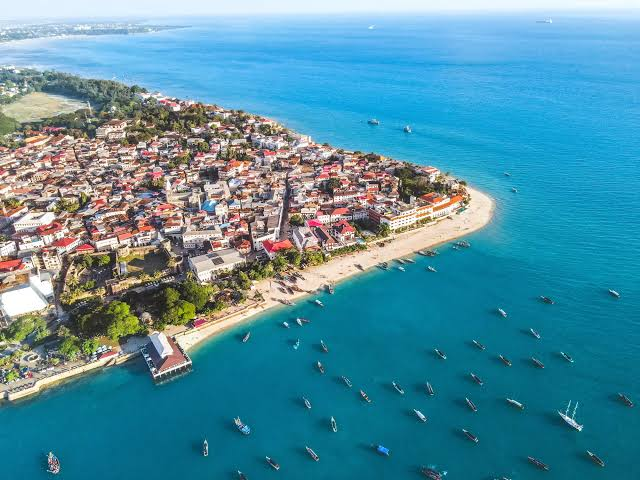
Explore the historical richness of Stone Town, a UNESCO World Heritage Site, with its winding alleys, architecture, and spice markets.

Relax on pristine beaches with turquoise waters and lush vegetation, engaging with vibrant marine life.
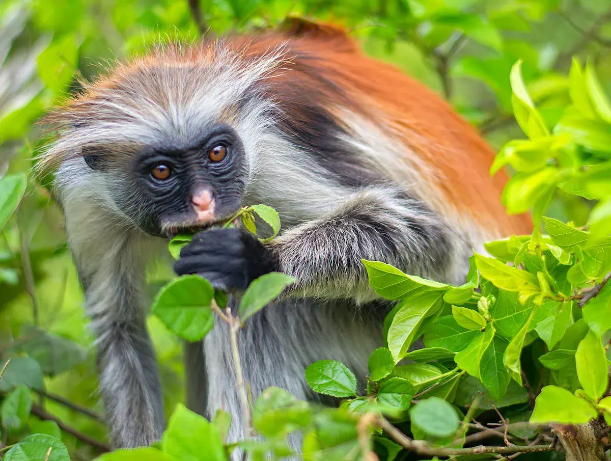
Spanning 50 square kilometers, essential for observing the endangered Kirk's Red Colobus Monkeys and other wildlife.
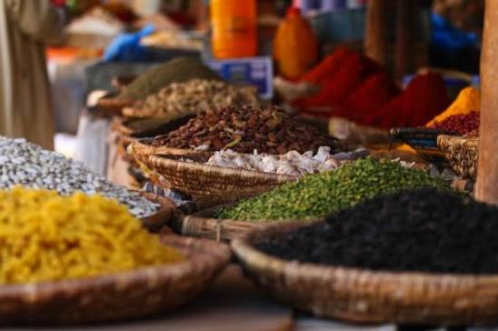
The island's fertile land fosters a variety of spices, such as cinnamon and cloves, with spice plantation tours.
Zanzibar's diverse landscapes provide exceptional snorkeling, scuba diving, and water sports opportunities.
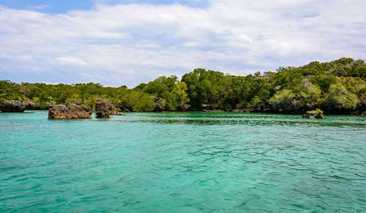
Visit Chumbe Island for eco-friendly bandas and sustainable living, or enjoy yoga and wellness retreats.
Experience the perfect blend of culture, history, and tropical paradise with VOT.
Contact us to book your Zanzibar getaway today!
Book Your Zanzibar TourGood to Know
Absolutely — many volunteers add on a safari, a Zanzibar beach trip, or local Mwanza activities before or after their placement. Let us know your interest and our team can help you plan it.
The local currency is the Tanzanian Shilling (TZS). US dollars in cash (2009 or newer bills) are widely accepted for larger payments such as park entry fees, and ATMs are available in Mwanza city centre for withdrawing shillings.
Airport pickup is included. Simply share your flight details with us after applying and our team will meet you at Mwanza Airport (MWZ).
In Their Words
"Combining my volunteering with the Zanzibar Island tour was a dream come true. VOT makes it so easy to experience the real Tanzania while contributing to a great cause."
James O'Connor — Ireland, Tourism & Hospitality
"The environmental conservation project around Lake Victoria was incredible. I loved that VOT organized weekend safaris to the Serengeti. It was the perfect balance of work and adventure!"
Michael Brown — Australia, Wildlife & Environment
Contact Us
Tell us your interests and availability — our team will help match you with the right placement.